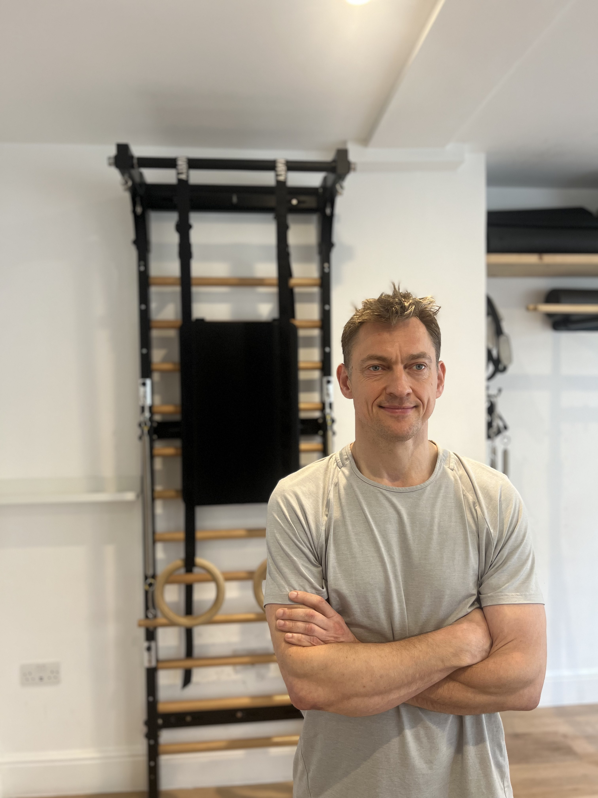
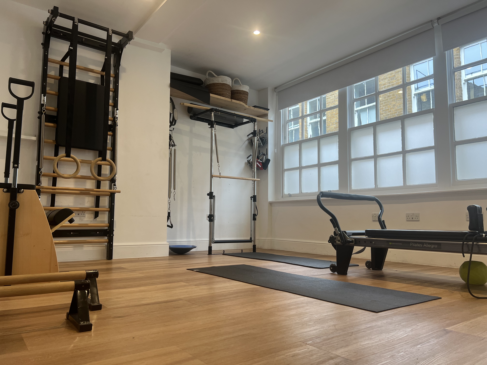

ABOUT STRONG & FLEXIBLE
Meet Irek
I'm Ireneusz Bialek, usually known as Irek. I help people build strength, explore how they move and feel more confident doing the things they enjoy.
My work brings together movement coaching, hands-on therapy and progressive strength training, shaped by over a decade of working with clients and my own experience of injuries, hypermobility and sport.
You might want to return to training, feel more comfortable in everyday movement, or find a starting point after a long period of difficulty. We start with you: what matters to you, what feels challenging and what you would like to be able to do.
Explore My Services
How I came to this work
I wasn't a naturally confident athlete. Growing up hypermobile, highly sensitive and neurodivergent, I often found movement difficult and experienced repeated ankle sprains. Understanding my own body became a personal interest long before it became my work.
Over the years, I served as a paratrooper in the Polish military, made more than 500 jumps, competed in skydiving, climbed and ran ultramarathons. I still train in martial arts. Alongside the enjoyment came injuries, setbacks and plenty of questions about how to recover and keep doing what I loved.
Those questions led me to Pilates, yoga, sports and remedial massage, strength training and the study of osteopathy. Anatomy in Motion, developed by Gary Ward, has also influenced how I observe walking and the relationship between the feet and the rest of the body.
My own experience makes me curious about what might help another person. It also reminds me that their experience may be very different from mine. I bring that curiosity to every session, looking for a useful starting point and adapting as we learn what works for you.
Movement for the life you want to enjoy
Movement is how we take part in life: working, dancing, gardening, playing with our children, or reaching out to hug someone. It is part of how we express ourselves and connect with other people.
The physiologist and osteopathic researcher Irvin Korr described the neuromusculoskeletal system as the “primary machinery of life”. That idea resonates with me because it places movement in the context of a person's whole life.
For me, the purpose of training is to help you enjoy more of what matters to you. For one person that means athletic performance; for another it means getting down to the floor, carrying shopping, or returning to a favourite activity with more confidence.
I believe everyone deserves the opportunity to explore their capacity to improve. Progress looks different for each person and depends on their health, circumstances and starting point. We look for meaningful steps towards greater strength, awareness, comfort or independence, at a pace that works for you.
How I work with you
We talk about your goals and explore movement together. I explain what I'm noticing, listen to what you feel and use that information to guide the next step. Depending on your needs, our work may include:
Explore movement
Observe how you walk, shift weight and move through a task. Try different movements and cues to find options that feel useful and understandable.
Use hands-on support
Where appropriate, use sports and remedial therapy to work on discomfort or restricted movement, then see how that relates to the activities you want to do.
Build strength and capacity
Develop control and strength through practice and progressive loading, from manageable exercises to the demands of your sport or everyday life.
You don't need to be sporty, flexible or confident in a gym to start. You are welcome if movement feels unfamiliar, if you have a complicated history, or if you simply want to feel more capable. We can adapt the pace, explanations and practice to suit how you learn.
Between sessions, we agree on practical things you can work on. Your feedback helps us adjust the approach and build on progress over time.
Explore My ServicesQualifications and ongoing learning
My formal qualifications include:
- Level 5 Sports & Remedial Massage Therapist
- Qualified Personal Trainer
- Qualified Pilates Instructor
- Qualified Yoga Instructor
I am currently studying towards a master's degree in osteopathy. This ongoing study informs my work as a movement coach and sports and remedial therapist.
Alongside formal study, I continue to learn through practical work with clients, reading research and testing ideas in my own training.
A private studio near Liverpool Street
You'll find me at 14 Devonshire Row, Second Floor, London, EC2M 4RH, a short walk from Liverpool Street Station.
The studio offers a calm, focused space for one-to-one sessions, with time to ask questions, practise and work at your own pace.
Equipment includes a Pilates Reformer, Wunda Chair, Fuse Ladder, Half Cadillac and gymnastics rings, alongside space for movement and strength work. What we use depends on what is useful for you.

Let's find your starting point
The Initial Movement Assessment & Practical Session gives us 60 minutes to talk about what matters to you, explore how you move and try some practical work together.
The session costs £95. You'll leave with a clearer idea of what we can work on and some practical next steps, with no obligation to book a package.
Explore your initial session (£95)Questions before booking? Email Irek or call 07841 405 746.